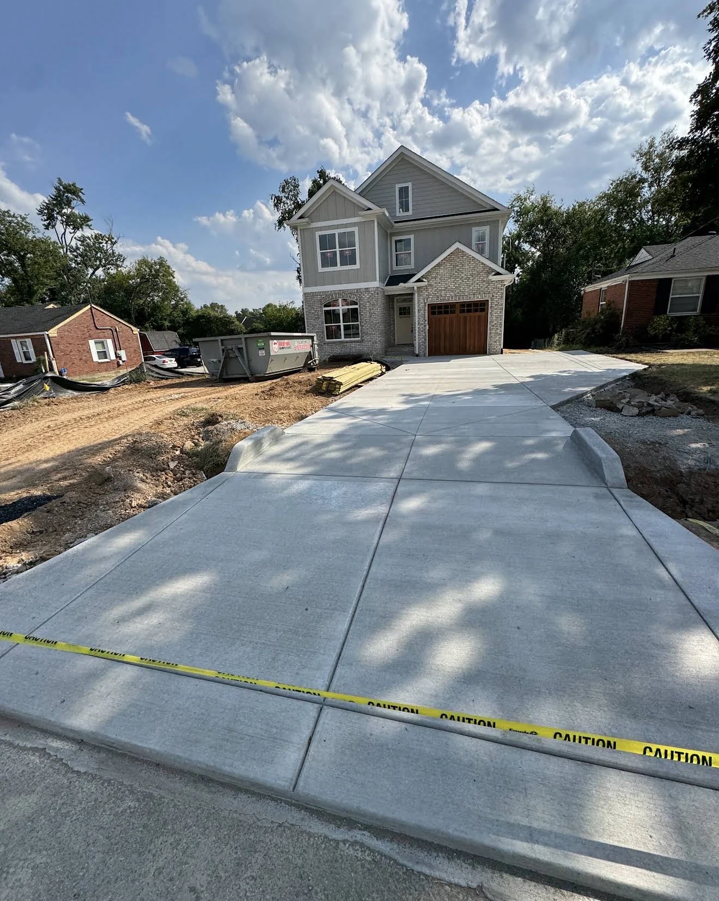
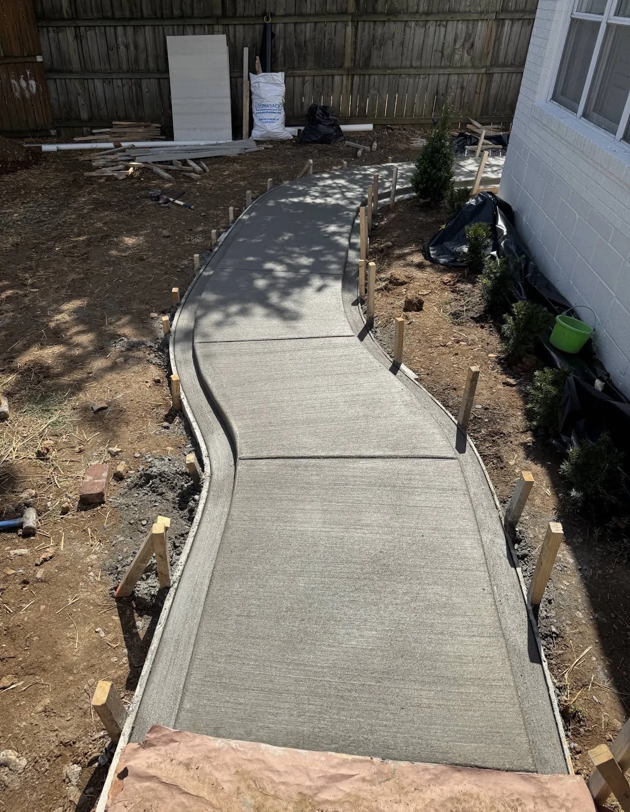
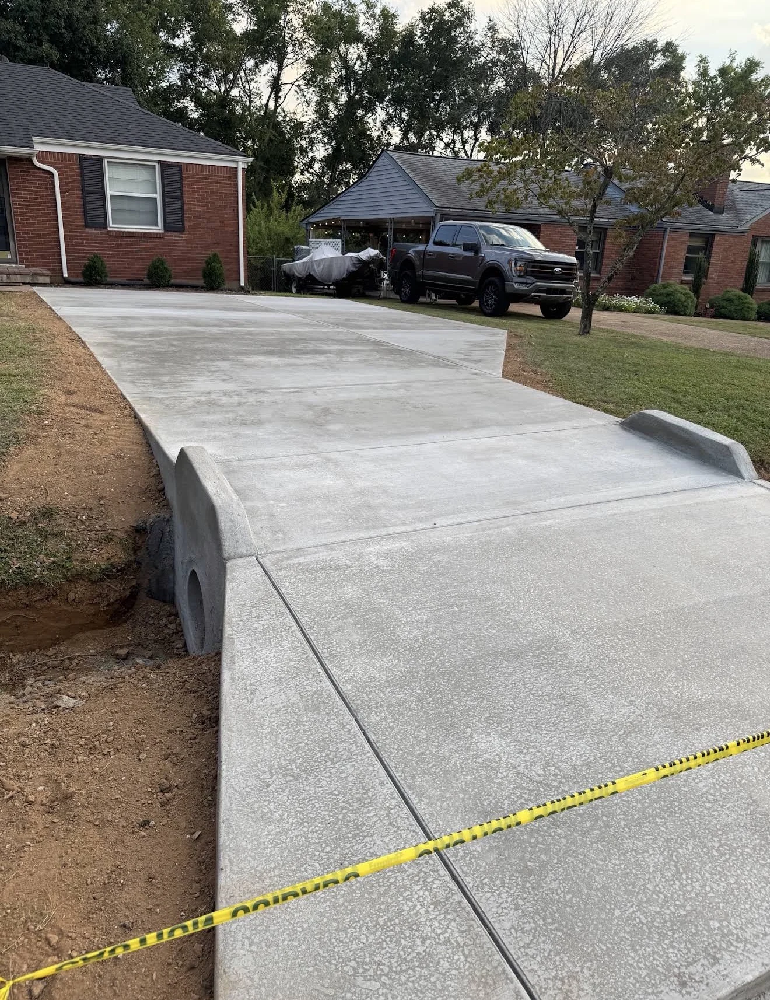
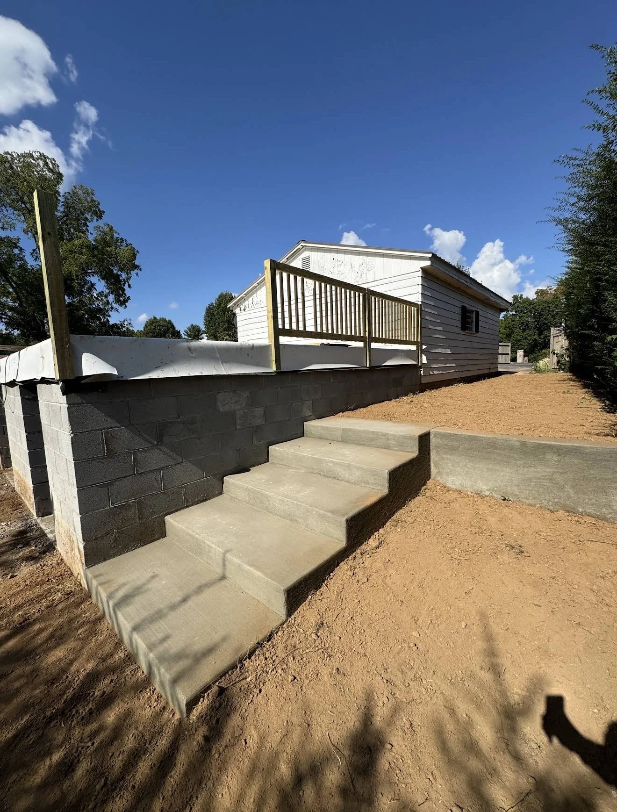
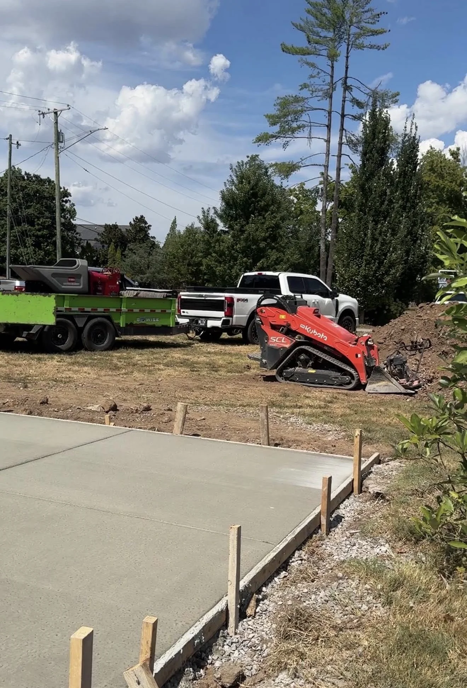
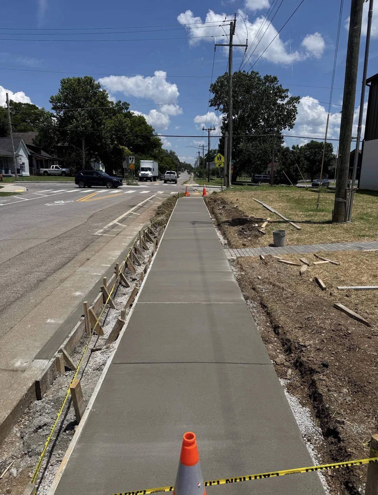
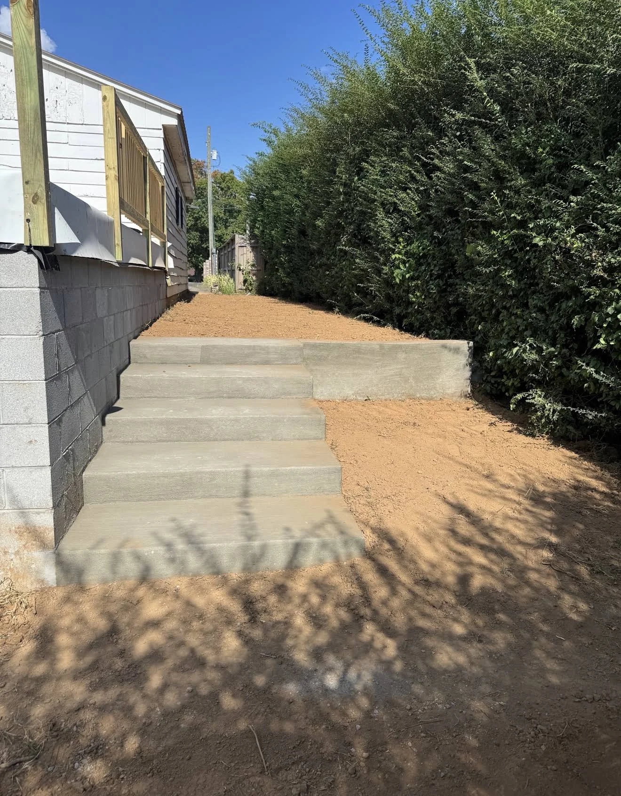
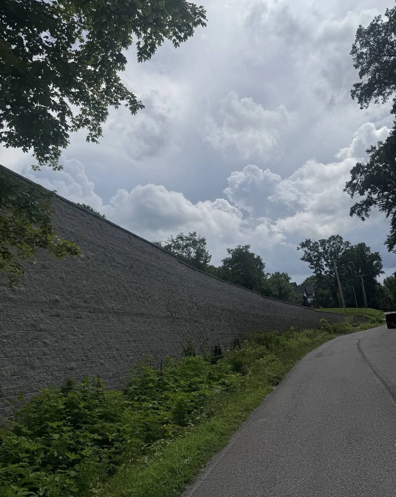

Driveways & approaches
A crisp arrival, a better parking layout and a concrete entrance built around your home's access.
AC ARMANDO CONCRETE / NASHVILLE, TN
Driveways that welcome you home. Walkways that make every step easier. Concrete work shaped around the way your property really lives.




NASHVILLE / PROJECT 001
A STRONGER START
The part you see is only the beginning. Each project has its own setting, access and purpose. We pay attention to the groundwork, the details around your property and the finish that brings it all together.
From a front drive to a full site pathway, the goal is straightforward: solid, clean work that makes your space work better.
A little about how we work ↘Built around the siteEvery property has its own layout and access.
Prepared with careThoughtful groundwork shapes a better finish.
Residential to commercialConcrete for homes, businesses and the spaces between.
WHAT WE DO / 01—06
From a fresh driveway to a path that carries you through the site, explore the kinds of concrete work in Armando's project portfolio.
A crisp arrival, a better parking layout and a concrete entrance built around your home's access.

02Clear connections across a property, from curved garden paths to long commercial walkways.

03Concrete steps and entry transitions that connect changing levels and everyday routes.
Useful outdoor surfaces for gathering, moving through the yard and making more of your property.

05Hard-working concrete and blockwork to shape, support and define outdoor areas.
Grading, base preparation and the behind-the-scenes work that gets a concrete site ready.
THE WORK / PROJECT PHOTOS
A closer look at the concrete, access and site work in Armando's project photos.
ON SITE / IN MOTION
See Armando's work in motion. Play a reel here or open it on Facebook.
FOUR FACEBOOK REELSOUR APPROACH / THE DETAILS MATTER
Every concrete job begins with the site. We talk through the space, understand what needs to happen and give the work the preparation it calls for.
Call (615) 438-5306Tell us about the space, access and what you want to change.
Talk through the layout, site preparation and finish that suit the project.
Shape the work around the property and the result you have in mind.
Review the finished work and follow the use and curing guidance for the project.
AC / ARMANDO CONCRETE
Good concrete is a meeting of careful preparation and a finish that feels right for the place. That's the standard behind every photo in this portfolio.
Leave a review on Google ↗YOUR EXPERIENCE / IN YOUR WORDS
Have you worked with AC Armando Concrete? Share an honest note about your project and help a neighbor know what to expect.
Leave a review on GoogleGoogle will open the business profile. Choose “Write a review” to share your feedback.
HAVE A SPACE IN MIND?
Describe the work, share where it's located and tell us what you hope to change. Start with a quick call or send a text.